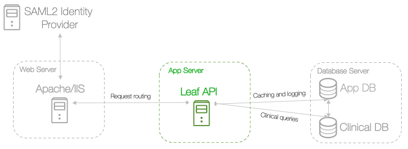
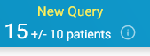
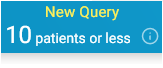
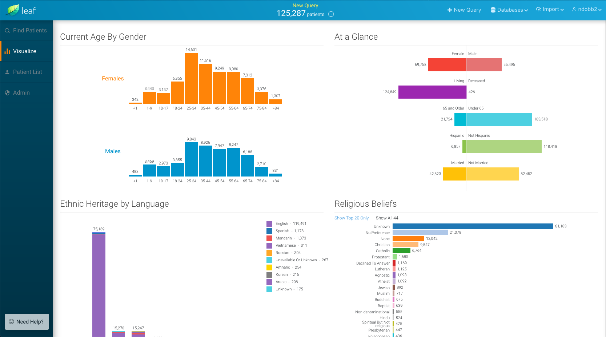

6 - Configure the appsettings file¶

The appsettings.json file acts as the central configuration file for your Leaf instance. When the API is run, it begins by reading the appsettings.json file within the compiled API.dll directory to determine how to authenticate users, how to display the Leaf user interface, how to compile SQL statements, and more.
In the Leaf source code this file can be found under src/server/API/ relative to the Leaf git repository root directory.
As we already compiled the API in Step 4, though, it can now be found and further customized at the top level of the API.dll directory.
On the app server, edit the /var/opt/leafapi/api/appsettings.json file to suit your usage needs based on the parameters described below.
Runtime¶
- Mode:
FULL | GATEWAY-FULLmode is used in the vast majority of standard Leaf deployments. UseGATEWAYonly in cases where this Leaf instance serves to query other federated Leaf instances, and has no clinical data of its own.
Jwt¶
- SigningKey:
LEAF_JWT_KEY- Name of the JWT signing key environment variable. - Password:
LEAF_JWT_KEY_PW- Name of the JWT signing key password environment variable. - Certificate:
LEAF_JWT_CERT- Name of the environment variable which points to thepemfile. - Issuer: Fully-qualified unique name for this Leaf instance (which issues authorized JWT tokens to users). This should match the
/CN=valueused in Step 3 - Create a JWT Signing Key. We recomended using a pattern such asurn:leaf:issuer:leaf.<your_institution>.edu.
Db¶
- App
- Connection:
LEAF_APP_DB- Name of the Leaf app database connection string environment variable. - DefaultTimeout: Number of seconds allowed before a Leaf app database query times out.
- Connection:
- Clin
- Connection:
LEAF_CLIN_DB- Name of the Leaf app database connection string environment variable. - DefaultTimeout: Number of seconds allowed before a clinical database query times out.
-
Cohort:
-
QueryStrategy:
CTE | PARALLEL-CTEqueries wrap individual Leaf panel SQL within a single larger CTE query, and leverage the SQL engine to find the intersect.PARALLELqueries are performed concurrently by the Leaf API, which then map/reduces the results to find the intersect.Given the following example query:

Leaf would generate SQL similar to (formatted for readability):

In general, we recommend using
CTE, though if you are finding that one particularly expensive panel's query slows down or times out the entire CTE query,PARALLELmay be a good option. -
MaxParallelThreads: Maximum number of allowed concurrent queries to execute if the
PARALLELQueryStrategy. Defaults to5if this value is absent.
-
- Connection:
Authentication¶
- Mechanism:
SAML2 | UNSECURED- OnlySAML2is currently supported for production. UseUNSECUREDfor development. - SessionTimeoutMinutes: Number of minutes allowed before a session expires. We recommend aligning this value with the timeout configuration other Service Provider used (e.g., Shibboleth).
- InactivityTimeoutMinutes: Number of minutes allowed before a lack of user logs a user out of Leaf.
- LogoutURI: The URI/URL Leaf will redirect to in the browser upon user logout. For Shibboleth, this is typically of the form
https:<your_leaf_url>.edu/Shibboleth.sso/Logout?return=<Shibboleth_specific_logout_URL> - SAML2
- Headers
- ScopedIdentity: The SAML2 Attribute name which identifies a given user.
- Headers
Authorization¶
- Mechanism:
SAML2 | UNSECURED- OnlySAML2is currently supported for production. UseUNSECUREDfor development. - SAML2
- HeadersMapping
- Entitlements
- Name: The SAML2
Attribute namewhich identifies groups the user is in. - Delimiter: The delimeter character which separates group names under Entitlements.Name. This is typically
;.
- Name: The SAML2
- Entitlements
- RoleMapping
- User: User group from
Entitlements.Namewhich the user must be a member of to be a Leaf user. - Super: User group from
Entitlements.Namewhich the user must be a member of to be a Leaf super user. Please note that this role is only a placeholder, and does not currently confer any additional functionality. - Identified: User group from
Entitlements.Namewhich the user must be a member of to see identified health information. - Admin: User group from
Entitlements.Namewhich the user must be a member of to be a Leaf administrator. - Federated: User group from
Entitlements.Namewhich the user must be a member of to be able to query other federated Leaf instances (if configured).
- User: User group from
- HeadersMapping
Attestation¶
- Enabled -
true | false- Value which indicates whether the login attestation screen should be shown in the user interface.
Compiler¶
Example configurations:
OMOP
"Alias": "@",
"FieldPersonId": "person_id",
"FieldEncounterId": "visit_occurrence_id",
i2b2
"Alias": "@",
"FieldPersonId": "PATIENT_NUM",
"FieldEncounterId": "ENCOUNTER_NUM",
- Alias:
@- Unique character which Leaf will replace with a SQL Set alias when compiling SQL queries. - FieldPersonId: SQL field that must be present on every SQL object Leaf will query which uniquely identifies patients in the clinical database.This is usually a value such as
person_id,PATIENT_NUM,PAT_ID, etc. - FieldEncounterId: SQL field that must be present on every SQL object Leaf will query which has a one-to-many relationship to patients, such thatpatients can have many over time. This field uniquely identifies for encounters, and is usually a value such as
visit_occurrence_id,ENCOUNTER_NUM, orEncounterId.
Cohort¶
- RowLimit: Maximum allowed number of unique patients which Leaf will cache for a given query. If a user's query exceeds this number, Leaf will not generate Visualization or Patient List screen data.
- ExportLimit: Maximum allowed number of unique patients which Leaf will export to REDCap.
Export¶
-
REDCap
- Enabled:
true | false- Value which indicates REDCap export is enabled. - ApiURI: URI for the REDCap instance you wish to export to. This should be of the form:
https://<your_redcap_instance>.org/api/ - BatchSize: Number of rows per batch which Leaf will use to export data to REDCap. We recommend
10. - RowLimit: Maximum number of rows of data which Leaf will export to REDCap.
-
Scope: Scoped value to add to the end of a user name when granting them ownership of a new REDCap project.
For example, if user
james007is using Leaf and theScopeismi6.uk.gov, Leaf will set the project owner asjames007@mi6.uk.gov. -
IncludeScopeInUsername: By default, when Leaf concludes a REDCap export, it gives REDCap a project owner of the form:
<current_leaf_username>+@+<scope_defined_above>To use only<current_leaf_username>as the username, set this value tofalse. - SuperToken:
LEAF_REDCAP_SUPERTOKEN- Name of the REDCap Super Token environment variable.
- Enabled:
-
CSV
- Enabled:
true | false- Value which indicates whether CSV export is enabled.
- Enabled:
Import¶
- REDCap
- Enabled:
true | false- Value which indicates REDCap import is enabled. - ApiURI: URI for the REDCap instance you wish to import from. This should be of the form:
https://<your_redcap_instance>.org/api/ - BatchSize: Number of rows per batch which Leaf will use to import into the Leaf app database from REDCap. We recommend
1000.
- Enabled:
Deidentification¶
- Patient
- Enabled:
true | false- Value which indicates whether patient-level de-identification is enabled. - Dateshifting
- Increment:
MINUTE | HOUR | DAY- Value which indicates the temporal unit by which to shift patient time values. - LowerBound: Numeric value which indicates the minimum number of
Incrementwhich Leaf should randomly shift a date (eg-365). - UpperBound: Numeric value which indicates the maximum number of
Incrementwhich Leaf should randomly shift a date (eg200).
- Increment:
- Enabled:
-
Cohort
- Enabled:
true | false- Value which indicates whether cohort-level de-identification is enabled. -
Noise:

- Enabled:
true | false- Value which indicates whether "Noise" should be randomly added to user queries to obfuscate true cohort counts. - LowerBound: Numeric value which indicates the minimum number of patients which Leaf should randomly shift a cohort count.
- UpperBound: Numeric value which indicates the maximum number of patients which Leaf should randomly shift a cohort count.
- Enabled:
-
LowCellMasking:

- Enabled:
true | false- Value which indicates whether cohort counts below aThresholdshould be masked to make the true value unclear to the user. - Threshold: Numeric value at or below which the true cohort count will not be shown to the user.
- Enabled:
- Enabled:
Client¶
- Map
- Enabled:
true | false- Boolean which indicates whether theMapscreen should be shown in the user interface.
- TileURI: URI for the tile layer from which to request dynamic images and generate maps for, such as
https://{s}.tile.openstreetmap.org/{z}/{x}/{y}.png. Leaf uses Leaflet.js and React-Leaflet for map generation. A list of Leaflet tile layer providers can be found at https://leaflet-extras.github.io/leaflet-providers/preview/.
- Enabled:
- Visualize
- Enabled:
true | false- Boolean which indicates whether theVisualizescreen should be shown in the user interface.  - ShowFederated:
true | false- Value which indicates whether theVisualizeresults for federated Leaf instances should be shown in the user interface. Iffalse, only aggregate results from all Leaf instance will be shown.
- Enabled:
- Timelines
- Enabled:
true | false- Boolean which indicates whether the Timelines` screen should be shown in the user interface.
- Enabled:
- PatientList
- Enabled:
true | false- Boolean which indicates whether thePatient Listscreen should be shown in the user interface.
- Enabled:
- Help
- Enabled:
true | false- Boolean which indicates whether the Help box should be shown in the lower left of the user interface.
- Email: An email address to direct users to, suc has
<your_support_email>.edu. If blank, "Contact a Leaf administrator" will not be shown. - URI: A URI/URL to direct users to, such as
https://<your_support_page>. If blank, "Learn more here" will not be shown.
- Enabled:
Notification¶
- Enabled:
true | false- Boolean which indicates whether notification to administrators by email is enabled. - Email
- Server: SMTP server address from which to send emails from, such as
my.server.edu. - UseSSL:
true | false- Value which indicates whether SSL should be used for sending emails. - Sender
- Address: Email address auto-generated emails to administrators should be sent from.
- Receiver
- Address: Email address auto-generated emails should be sent to, such as an admin list-serv.
- Credentials
- Username:
LEAF_SMTP_USR- Name of the SMTP user name environment variable. - Password:
LEAF_SMTP_PW- Name of the SMTP user password environment variable.
- Username:
- Server: SMTP server address from which to send emails from, such as